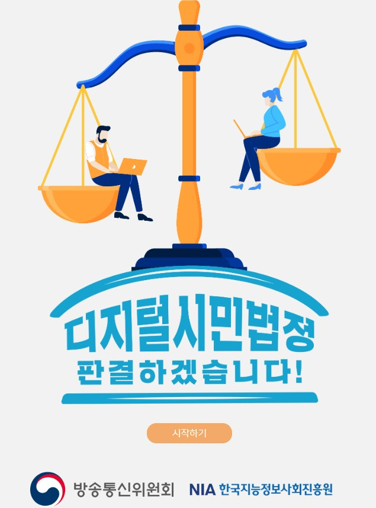

|
 |
 |
 |
 |
디지털 안전을 위협하는 사례 탐구방송통신위원회와 한국지능정보사회진흥원이 추진하고 있는 사업(아름다운 디지털 세상 (https://ainse.kr/main.do) - 청소년들이 만날 수 있는 디지털 안전 위협 사례를 자세하게 살펴보고 예방을 위한 지식 제공 메신저, 메시지, 카페, 블로그, 동영상, 뉴스 등 디지털 안전사고의 가능성이 있는 분야를 가상으로 체험해보며 디지털 윤리 의식 제고 |
개인정보의 개념과 중요성: 1. 개인정보? 그게 뭐예요?(3분 59초) 최근 개인정보가 유출되는 사건이 많으므로 관련 개념과 중요성을 사례를 통해 확인 |
개인정보의 개념과 중요성: 2. 개인정보가 위험해요!(5분 12초) 최근 개인정보가 유출되는 사건이 많으므로 관련 개념과 중요성을 사례를 통해 확인 |
개인정보의 개념과 중요성: 3. 개인정보를 구해줘요!(5분 36초) 최근 개인정보가 유출되는 사건이 많으므로 관련 개념과 중요성을 사례를 통해 확인 |
디지털 전환 시대에 필요한 법률 탐구 : 방송통신위원회와 한국지능정보사회진흥원이 추진하고 있는 사업(아름다운 디지털 세상 (https://ainse.kr/main.do) - 청소년들이 디지털 환경에서 만날 수 있는 다양한 유형의 갈등 사례를 직접 판결해보며 디지털 윤리성 향상 악성댓글, 기프티콘, 메신저 등 사회에서 빈번하게 발생하는 디지털 갈등 사례를 판사가 되어 직접 판결해보고 사건을 깊이 있게 생각해 보는 기회 제공 |